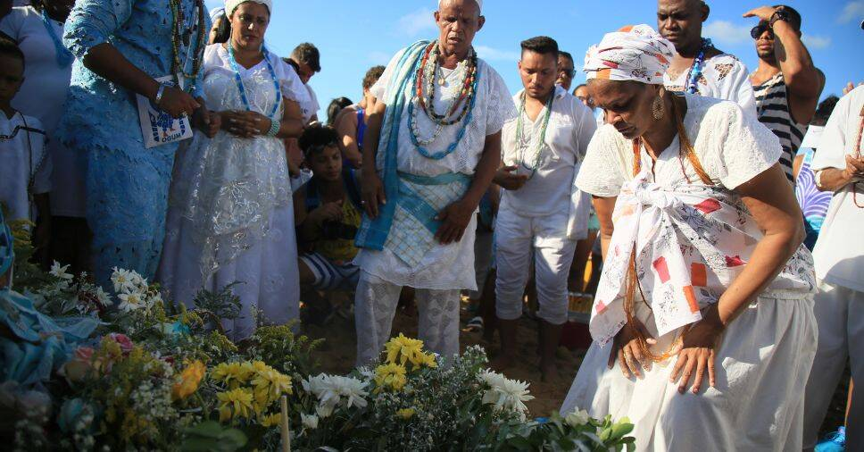
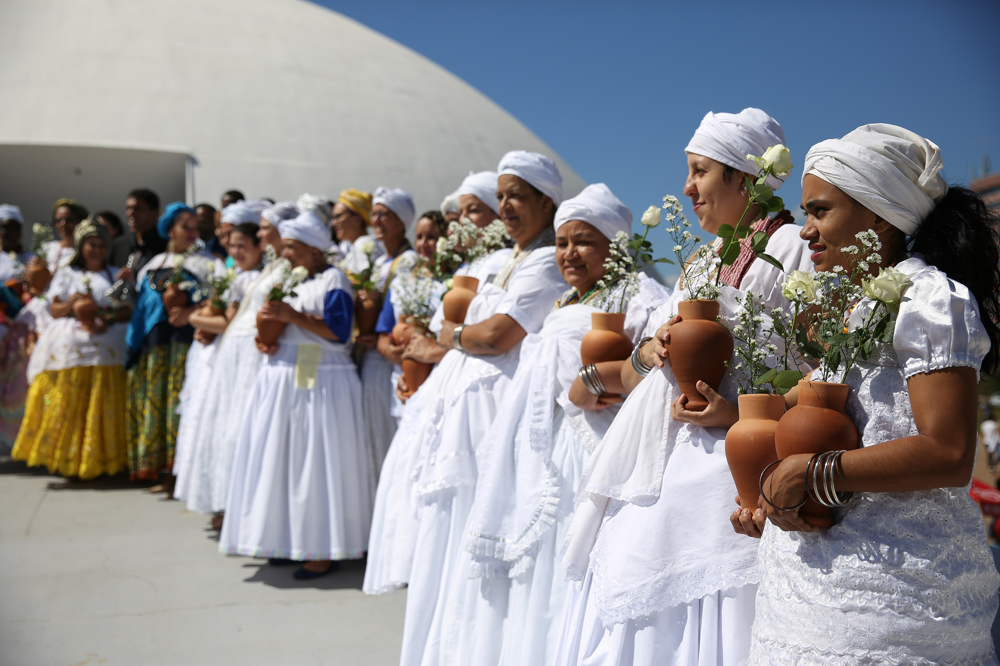

Umbanda: Origem, Tradições, Costumes, Banhos e Saudações
Origem e História da Umbanda
A Umbanda é uma religião genuinamente brasileira, nascida da síntese de diversas tradições espirituais e culturais. Sua origem oficial é frequentemente atribuída a um marco histórico específico: o dia 15 de novembro de 1908, quando o médium Zélio Fernandino de Moraes, então com 17 anos, recebeu em uma sessão espírita na Federação Espírita de Niterói, Rio de Janeiro, a entidade conhecida como Caboclo das Sete Encruzilhadas.
Naquela ocasião, o Caboclo das Sete Encruzilhadas anunciou o início de um novo culto, no qual espíritos de índios e escravos africanos, considerados "atrasados" pela doutrina kardecista da época, poderiam trabalhar e se manifestar. Essa manifestação representou um importante ato de resistência contra o preconceito racial e social que permeava até mesmo os ambientes religiosos, estabelecendo as bases para uma religião inclusiva e democrática.
No dia seguinte, 16 de novembro de 1908, foi fundado o primeiro terreiro de Umbanda, a Tenda Espírita Nossa Senhora da Piedade, no bairro de Neves, em São Gonçalo, Rio de Janeiro. A partir desse núcleo inicial, a Umbanda se expandiu por todo o Brasil, incorporando elementos de diversas tradições religiosas e adaptando-se às particularidades culturais de cada região.
No entanto, é importante ressaltar que, embora esse seja o marco "oficial" do surgimento da Umbanda como religião organizada, suas raízes são muito mais antigas e complexas. A Umbanda representa o resultado de um longo processo de sincretismo religioso que ocorreu no Brasil desde o período colonial, envolvendo tradições africanas (principalmente de origem banto e iorubá), o espiritismo kardecista, o catolicismo popular, tradições indígenas e elementos do esoterismo europeu.
Durante o século XX, a Umbanda enfrentou períodos de intensa perseguição, especialmente durante o Estado Novo (1937-1945), quando as religiões de matriz africana eram criminalizadas e seus terreiros frequentemente invadidos pela polícia. Apesar disso, a religião continuou a crescer e a se desenvolver, estabelecendo-se como uma importante expressão da espiritualidade brasileira.
Nas décadas de 1950 e 1960, houve tentativas de institucionalização e unificação da Umbanda, com a criação de federações e a realização de congressos nacionais. No entanto, a diversidade de práticas e interpretações sempre foi uma característica marcante da religião, resultando em diferentes "linhas" ou "falanges" dentro da Umbanda.
Hoje, a Umbanda é praticada em todo o Brasil e em diversos países ao redor do mundo, representando uma síntese única da diversidade cultural e espiritual brasileira. É reconhecida como patrimônio cultural imaterial em várias cidades e estados brasileiros, refletindo sua importância na formação da identidade nacional.
Fundamentos e Cosmologia da Umbanda

A cosmologia umbandista é rica e complexa, refletindo suas diversas influências. No centro de sua teologia está a crença em um Deus único e supremo, chamado de Olorum, Zambi ou simplesmente Deus, dependendo da tradição do terreiro. Esse ser supremo é considerado a fonte de toda a criação e energia vital.
Abaixo do Ser Supremo, a Umbanda reconhece diversas entidades espirituais organizadas em "linhas" ou "falanges", cada uma com características e funções específicas. As principais linhas da Umbanda são:
1. Linha de Oxalá: Liderada por Oxalá (sincretizado com Jesus Cristo), representa a paz, a pureza e a criação. Nesta linha trabalham espíritos de luz, mentores e guias espirituais de elevada evolução.
2. Linha de Iemanjá: Regida por Iemanjá (sincretizada com Nossa Senhora), representa as águas, a maternidade e o acolhimento. Nesta linha trabalham entidades ligadas ao elemento água e aos aspectos maternais e emocionais.
3. Linha de Oxum: Governada por Oxum (sincretizada com Nossa Senhora da Conceição), representa as águas doces, o amor, a beleza e a prosperidade. Suas entidades trabalham com questões amorosas, fertilidade e abundância.
4. Linha de Xangô: Liderada por Xangô (sincretizado com São Jerônimo ou São João Batista), representa a justiça, as pedreiras e os trovões. Suas entidades trabalham com questões de justiça, equilíbrio e superação de obstáculos.
5. Linha de Ogum: Regida por Ogum (sincretizado com São Jorge), representa a guerra, a tecnologia e a abertura de caminhos. Suas entidades trabalham com proteção, remoção de obstáculos e conquistas.
6. Linha de Oxóssi: Governada por Oxóssi (sincretizado com São Sebastião), representa as matas, a caça e a fartura. Suas entidades trabalham com cura, prosperidade e conexão com a natureza.
7. Linha de Obaluaê/Omulu: Liderada por Obaluaê (sincretizado com São Lázaro), representa a saúde, a doença e a transformação. Suas entidades trabalham com cura de doenças físicas e espirituais.
Além dessas linhas principais, a Umbanda trabalha com diversas categorias de entidades espirituais, como:
Caboclos: Espíritos de índios brasileiros que trabalham com cura, conhecimento das ervas e proteção espiritual. São conhecidos por sua sabedoria, força e conexão com a natureza.
Pretos-Velhos: Espíritos de antigos escravos africanos que trabalham com aconselhamento, cura e resolução de problemas. São conhecidos por sua paciência, sabedoria e humildade.
Crianças (Erês): Espíritos que se manifestam com a energia da infância, trabalhando com alegria, purificação e quebra de negatividade. São conhecidos por sua espontaneidade e capacidade de renovação.
Exus e Pombagiras: Entidades que trabalham na linha de esquerda, atuando como guardiões e mensageiros. São responsáveis pela proteção espiritual, remoção de obstáculos e trabalhos de defesa.
Boiadeiros: Espíritos de vaqueiros e trabalhadores do campo, que atuam com firmeza e determinação na resolução de problemas e na proteção espiritual.
Marinheiros: Espíritos de antigos navegadores, que trabalham com questões emocionais, vícios e transformações profundas.
Ciganos: Espíritos do povo cigano, que trabalham com questões amorosas, prosperidade e vidência.
A Umbanda ensina que todas essas entidades são espíritos que já viveram na Terra e que, após sua desencarnação, escolheram continuar trabalhando em benefício da humanidade. Cada uma delas possui características, histórias e métodos de trabalho específicos, refletindo a diversidade cultural e espiritual que compõe a religião.
Rituais e Cerimônias
Os rituais da Umbanda são realizados em espaços sagrados chamados terreiros, tendas ou centros. Esses locais são organizados de acordo com as tradições específicas de cada casa, mas geralmente incluem um altar central (congá ou peji) onde são dispostas imagens de santos católicos (representando os orixás sincretizados), velas, flores e outros elementos rituais.
A principal cerimônia da Umbanda é a gira, um ritual coletivo onde os médiuns incorporam as entidades espirituais para realizar trabalhos de cura, aconselhamento e auxílio espiritual. As giras podem ser dedicadas a linhas específicas de entidades (gira de caboclos, gira de pretos-velhos, etc.) ou podem ser giras gerais, onde diversas entidades se manifestam.
Uma gira típica de Umbanda segue um roteiro que inclui:
1. Abertura: Orações iniciais, como o Pai Nosso e a Ave Maria, seguidas de pontos cantados (cantigas rituais) para defumação e proteção do terreiro.
2. Defumação: Utilização de ervas e incensos específicos para purificar o ambiente e os participantes, afastando energias negativas e preparando o espaço para os trabalhos espirituais.
3. Saudação aos Orixás: Pontos cantados e reverências aos orixás, pedindo permissão e proteção para os trabalhos.
4. Desenvolvimento: Momento em que os médiuns incorporam as entidades, que então realizam consultas, passes, aconselhamentos e trabalhos espirituais para os consulentes.
5. Encerramento: Após a desincorporação das entidades, são realizadas orações finais e pontos cantados de encerramento, agradecendo pela proteção e pelos trabalhos realizados.
Além das giras regulares, a Umbanda celebra diversas festas ao longo do ano, muitas delas coincidindo com datas do calendário católico devido ao sincretismo religioso. Algumas das principais celebrações incluem:
- Festa de Oxalá (sincretizado com Jesus Cristo): Celebrada próximo ao Natal ou na Semana Santa.
- Festa de Iemanjá: Celebrada em 2 de fevereiro ou 8 de dezembro, dependendo da região.
- Festa de Ogum (sincretizado com São Jorge): Celebrada em 23 de abril.
- Festa de Oxóssi (sincretizado com São Sebastião): Celebrada em 20 de janeiro.
- Festa dos Pretos-Velhos: Celebrada em 13 de maio, data da abolição da escravatura no Brasil.
- Festa de Cosme e Damião (linha das crianças): Celebrada em 27 de setembro.
- Festa de Exu e Pombagira: Celebrada em datas variáveis, dependendo da tradição do terreiro.
Banhos Rituais na Umbanda
Os banhos rituais ocupam um lugar de destaque nas práticas da Umbanda, sendo utilizados para limpeza espiritual, proteção, abertura de caminhos e equilíbrio energético. Esses banhos são preparados com ervas específicas, cada uma com propriedades e finalidades particulares, e são prescritos pelas entidades de acordo com as necessidades de cada pessoa.
Os principais tipos de banhos utilizados na Umbanda são:
Banho de Descarrego: Utilizado para limpar energias negativas, influências espirituais indesejadas e cargas pesadas. Geralmente contém ervas como arruda, guiné, espada-de-são-jorge, alecrim, sal grosso e alfazema. É recomendado tomar este banho após o pescoço, deixando a água escorrer pelo corpo, e não se enxugar depois, permitindo que o corpo seque naturalmente.
Banho de Abertura de Caminhos: Utilizado para remover obstáculos e atrair oportunidades positivas. Contém ervas como manjericão, alecrim, canela, louro e mel. Deve ser tomado preferencialmente pela manhã, para energizar o dia que se inicia.
Banho de Proteção: Utilizado para criar um campo de proteção espiritual contra energias negativas e trabalhos de magia. Contém ervas como arruda, alecrim, manjericão, guiné e sal grosso. Pode ser tomado regularmente como forma de manutenção da proteção espiritual.
Banho de Amor: Utilizado para harmonizar relacionamentos e atrair energias amorosas. Contém ervas e elementos como rosas, pétalas de flores vermelhas, canela, mel e essência de ylang-ylang. É recomendado tomar este banho nas noites de sexta-feira, dia consagrado a Oxum e às energias do amor.
Banho de Prosperidade: Utilizado para atrair abundância e sucesso material. Contém ervas como canela, louro, manjericão, alecrim e mel. É recomendado tomar este banho nas manhãs de quinta-feira, dia consagrado a Xangô e às energias da prosperidade.
Banho de Ervas do Orixá: Cada orixá possui suas ervas específicas, e banhos preparados com essas ervas são utilizados para fortalecer a ligação com o orixá regente da pessoa. Por exemplo, para Oxum, utilizam-se ervas como manjericão, malva, camomila e macaçá; para Ogum, utilizam-se espada-de-são-jorge, aroeira, guiné e comigo-ninguém-pode.
A preparação dos banhos segue rituais específicos, que podem variar de acordo com a tradição do terreiro. Em geral, as ervas são colhidas em momentos propícios (como ao amanhecer), com pedidos de permissão à natureza e aos orixás. São então maceradas ou fervidas em água, que é deixada para esfriar antes do uso. Durante a preparação, são entoados pontos cantados e feitas orações específicas para potencializar as propriedades das ervas.
Os banhos podem ser tomados de diferentes formas, dependendo de sua finalidade:
- Banho de abô: Tomado do pescoço para baixo, deixando a cabeça livre.
- Banho de cabeça: Aplicado apenas na cabeça, para equilibrar o ori (centro espiritual localizado na cabeça).
- Banho completo: Tomado em todo o corpo, incluindo a cabeça.
Após o banho ritual, recomenda-se um período de recolhimento e evitar lugares com grandes aglomerações ou energias pesadas, para que o efeito do banho seja preservado e potencializado.
Saudações aos Guias e Orixás
Na Umbanda, as saudações aos guias e orixás são formas de demonstrar respeito e estabelecer conexão com as entidades espirituais. Cada linha de entidades e cada orixá possui suas próprias saudações, que podem incluir palavras, gestos e reverências específicas.
Algumas das principais saudações utilizadas na Umbanda são:
Oxalá: "Epa Babá!" ou "Axé Babá!". O gesto associado é levantar as duas mãos abertas acima da cabeça, com as palmas voltadas para frente, simbolizando paz e pureza.
Iemanjá: "Odoyá!" ou "Salve Mãe Iemanjá!". O gesto associado é um movimento ondulado com as mãos, imitando as ondas do mar, ou levar as mãos ao peito e depois estendê-las à frente, como oferecendo o coração.
Oxum: "Ora Ieiê!" ou "Ora Ieiê Oxum!". O gesto associado é semelhante ao de Iemanjá, mas mais delicado, ou um movimento que simula se olhar em um espelho, simbolizando a vaidade e beleza de Oxum.
Xangô: "Kaô Kabiecilê!" ou "Kaô Xangô!". O gesto associado é bater os punhos um contra o outro, simbolizando o trovão e a força de Xangô.
Ogum: "Ogunhê!" ou "Patakori Ogum!". O gesto associado é um movimento que simula empunhar uma espada ou levantar o braço direito com o punho fechado, simbolizando a força guerreira de Ogum.
Oxóssi: "Okê Arô!" ou "Okê Caboclo!". O gesto associado é levantar o braço direito com a mão aberta, como se estivesse mirando com um arco e flecha, simbolizando a caça e a precisão de Oxóssi.
Obaluaê/Omulu: "Atotô!" ou "Atotô Ajuberô!". O gesto associado é uma reverência com o corpo inclinado para frente, evitando olhar diretamente para a entidade, em sinal de respeito à sua condição de senhor das doenças e da cura.
Nanã: "Saluba Nanã!" ou "Saluba Vovó!". O gesto associado é uma reverência profunda, quase tocando o chão com as mãos, simbolizando o respeito à ancestralidade e à sabedoria.
Exu: "Laroyê Exu!" ou "Mojubá Exu!". O gesto associado é bater três vezes com o pé direito no chão, simbolizando a conexão com a terra e o poder de Exu como mensageiro.
Pombagira: "Laroyê Pombagira!" ou "Salve Pombagira!". O gesto associado é um movimento circular com as mãos nos quadris, simbolizando a sensualidade e o poder feminino da entidade.
Para os guias espirituais, as saudações também variam de acordo com a linha:
Caboclos: "Okê Caboclo!" ou "Okê Arô!". Ao receber um caboclo, é comum fazer uma reverência com a cabeça e o tronco, em sinal de respeito à sua sabedoria e força.
Pretos-Velhos: "Salve Vovó!" ou "Salve Vovô!". Ao se aproximar de um preto-velho, é costume pedir a bênção, inclinando-se e estendendo as mãos com as palmas para cima, em sinal de humildade e respeito.
Crianças (Erês): "Salve as Crianças!" ou simplesmente "Salve!". Com as crianças, a abordagem é mais descontraída, podendo incluir palmas ritmadas e sorrisos.
Boiadeiros: "Êh Boiadeiro!" ou "Aboiô!". O gesto associado pode incluir um movimento que simula o laço do vaqueiro.
Marinheiros: "Salve Marinheiro!" ou "Odoyá Marinheiro!". O gesto pode incluir uma saudação naval, levando a mão à testa como em continência.
Ciganos: "Optchá!" ou "Salve o Povo Cigano!". O gesto pode incluir um movimento circular com as mãos, simbolizando as danças ciganas.
Estas saudações são parte importante do ritual umbandista, estabelecendo um canal de comunicação e respeito entre os praticantes e as entidades espirituais. Ao saudar corretamente um guia ou orixá, o fiel demonstra conhecimento das tradições e reverência às forças espirituais, facilitando o fluxo de energia e a conexão com o sagrado.
A Umbanda na Sociedade Contemporânea
A Umbanda, como religião genuinamente brasileira, ocupa um lugar único no panorama religioso nacional e internacional. Ao longo das décadas, tem enfrentado desafios significativos, como a intolerância religiosa e o preconceito, mas também tem conquistado reconhecimento e respeito crescentes.
Nos últimos anos, tem havido um movimento de valorização das religiões de matriz africana como parte fundamental do patrimônio cultural brasileiro. A Umbanda, em particular, tem sido reconhecida por sua contribuição para a formação da identidade nacional e por seu papel na promoção da inclusão social e do respeito à diversidade.
Ao mesmo tempo, a religião tem se adaptado às mudanças sociais e tecnológicas, com terreiros mantendo presença nas redes sociais, oferecendo atendimentos online durante a pandemia de COVID-19 e dialogando com questões contemporâneas como sustentabilidade ambiental, direitos humanos e justiça social.
A Umbanda continua a crescer e a se expandir, tanto no Brasil quanto internacionalmente, levando sua mensagem de fé, caridade e evolução espiritual a um número cada vez maior de pessoas. Como religião sincrética e inclusiva, oferece um espaço de acolhimento para indivíduos de diferentes origens e trajetórias, unidos pela busca de desenvolvimento espiritual e pelo compromisso com o bem comum.
Em um mundo marcado por divisões e conflitos, a Umbanda representa um exemplo de como diferentes tradições culturais e espirituais podem se encontrar e dialogar, criando algo novo e valioso. Sua ênfase na caridade, no respeito à natureza e na evolução pessoal e coletiva oferece importantes contribuições para os desafios enfrentados pela humanidade no século XXI.